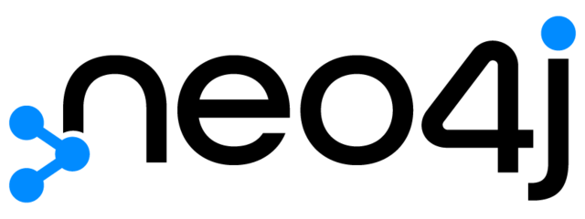

Guía rápida para configurar y administrar Neo4j en local o contenedores.
Antes de comenzar, asegúrate de lo siguiente:
Puedes utilizar el script de
docker_install.shde la carpeta/resourcespara instalar ambas cosas en WSL/Ubuntu.
2181 (Zookeeper), 9092 (broker de Kafka) y 29092 (acceso externo) están disponibles en tu máquina.El fichero pregenerado se encuentra en resources/bbdd/neo4j/:
docker-compose.yml
services:
neo4j:
image: neo4j:5.19
container_name: neo4j
ports:
- "7474:7474" # Neo4j Browser (web)
- "7687:7687" # Bolt protocol (drivers)
environment:
NEO4J_AUTH: "neo4j/password" # usuario/contraseña por defecto
NEO4J_dbms_memory_pagecache_size: 1G
NEO4J_dbms_memory_heap_initial__size: 1G
NEO4J_dbms_memory_heap_max__size: 2G
NEO4J_PLUGINS: '["apoc"]' # Plugin APOC para utilidades avanzadas
volumes:
- neo4j_data:/data
- neo4j_logs:/logs
- neo4j_import:/var/lib/neo4j/import
- neo4j_plugins:/plugins
restart: unless-stopped
volumes:
neo4j_data:
neo4j_logs:
neo4j_import:
neo4j_plugins:
NEO4J_AUTH: Usuario y contraseña inicial (formato usuario/contraseña).NEO4J_dbms_memory_pagecache_size: Tamaño de caché de página para mejorar el rendimiento de lectura.NEO4J_dbms_memory_heap_initial__size y NEO4J_dbms_memory_heap_max__size: Memoria heap mínima y máxima de la JVM.NEO4J_PLUGINS: Plugins adicionales a instalar (por defecto, APOC).neo4j_data: Datos persistentes.neo4j_logs: Logs del sistema.neo4j_import: Carpeta para importar datos.neo4j_plugins: Plugins externos.Puedes modificar estos valores según las necesidades del entorno de desarrollo o pruebas.
Inicia los contenedores de Neo4j usando Docker Compose.
docker-compose up -d
-d ejecuta los contenedores en segundo plano.Verifica que los contenedores estén en ejecución:
bash
docker ps
Deberías ver un contenedor: neo4j.
En la carpeta resources/bbdd/neo4j/ tienes un Makefile preparado para gestionar Neo4j fácilmente:
NEO4J_COMPOSE=docker-compose.yml
up:
docker compose -f $(NEO4J_COMPOSE) up -d
down:
docker compose -f $(NEO4J_COMPOSE) down
restart:
docker compose -f $(NEO4J_COMPOSE) restart
logs:
docker compose -f $(NEO4J_COMPOSE) logs -f
Ejecuta los siguientes comandos desde esa carpeta:
bash
make up
bash
make down
bash
make restart
bash
make logs
Nota: Para usar los comandos
make, asegúrate de tener instalado el paquetemake. Puedes instalarlo en sistemas basados en Debian/Ubuntu con:
sudo apt install make
neo4jpassword (o la que definas en NEO4J_AUTH)CREATE (p:Persona {nombre: 'Juan', edad: 30, ciudad: 'Madrid'})
CREATE (p2:Persona {nombre: 'Ana', edad: 28, ciudad: 'Barcelona'})
MATCH (a:Persona {nombre: 'Juan'}), (b:Persona {nombre: 'Ana'})
CREATE (a)-[:AMIGO_DE]->(b)
MATCH (p:Persona) RETURN p
MATCH (a:Persona)-[r:AMIGO_DE]->(b:Persona) RETURN a, r, b
MATCH (p:Persona {nombre: 'Juan'})
SET p.edad = 31
RETURN p
MATCH (p:Persona {nombre: 'Ana'})
DETACH DELETE p
import para cargas masivas de datos.APOC (Awesome Procedures On Cypher) es una colección de procedimientos y funciones avanzadas para Neo4j que amplía enormemente las capacidades de Cypher. Permite realizar tareas de integración, transformación de datos, generación de grafos, utilidades de import/export, manipulación de cadenas, fechas, colecciones y mucho más.
Algunas utilidades comunes:
Ejemplo práctico de uso de APOC:
Crear relaciones entre personas de la misma ciudad.
Crear nodos Persona:
CREATE
(p1:Persona {nombre: 'Juan', edad: 30, ciudad: 'Madrid', profesion: 'Ingeniero', email: 'juan@email.com', genero: 'M', empresa: 'TechCorp'}),
(p2:Persona {nombre: 'Ana', edad: 28, ciudad: 'Barcelona', profesion: 'Doctora', email: 'ana@email.com', genero: 'F', empresa: 'TechCorp'}),
(p3:Persona {nombre: 'Luis', edad: 35, ciudad: 'Madrid', profesion: 'Profesor', email: 'luis@email.com', genero: 'M', empresa: 'TechCorp'}),
(p4:Persona {nombre: 'María', edad: 27, ciudad: 'Valencia', profesion: 'Diseñadora', email: 'maria@email.com', genero: 'F', empresa: 'TechCorp'}),
(p5:Persona {nombre: 'Carlos', edad: 40, ciudad: 'Barcelona', profesion: 'Abogado', email: 'carlos@email.com', genero: 'M', empresa: 'TechCorp'}),
(p6:Persona {nombre: 'Lucía', edad: 32, ciudad: 'Madrid', profesion: 'Periodista', email: 'lucia@email.com', genero: 'F', empresa: 'TechCorp'}),
(p7:Persona {nombre: 'Elena', edad: 29, ciudad: 'Valencia', profesion: 'Arquitecta', email: 'elena@email.com', genero: 'F', empresa: 'TechCorp'}),
(p8:Persona {nombre: 'Miguel', edad: 31, ciudad: 'Madrid', profesion: 'Analista', email: 'miguel@email.com', genero: 'M', empresa: 'TechCorp'}),
(p9:Persona {nombre: 'Sergio', edad: 36, ciudad: 'Barcelona', profesion: 'Chef', email: 'sergio@email.com', genero: 'M', empresa: 'TechCorp'}),
(p10:Persona {nombre: 'Patricia', edad: 33, ciudad: 'Valencia', profesion: 'Psicóloga', email: 'patricia@email.com', genero: 'F', empresa: 'TechCorp'});
Crear nodos Ciudad:
MATCH (p:Persona)
WITH DISTINCT p.ciudad AS nombreCiudad
MERGE (:Ciudad {nombre: nombreCiudad})
Crear relaciones entre Persona y su Ciudad:
CALL apoc.periodic.iterate(
"
MATCH (p:Persona)
RETURN p
",
"
MATCH (c:Ciudad {nombre: p.ciudad})
MERGE (p)-[:VIVE_EN]->(c)
",
{batchSize:100, parallel:false}
)
Nota: Se puede realizar sin el plugin APOC, pero es menos eficiente cuando se trata de relaciones entre nodos con mucha cantidad de relaciones.
Otro ejemplo: importar datos desde un archivo CSV ubicado en el volumen import:
CALL apoc.load.csv('personas.csv') YIELD map AS row
CREATE (p:Persona {nombre: row.nombre, edad: toInteger(row.edad), ciudad: row.ciudad})
docker exec -it neo4j bash
cypher-shell -u neo4j -p password
neo4j-admin dump --database=neo4j --to=backup.dump
neo4j-admin load --from=backup.dump --database=neo4j --force
usuario/contraseña).neo4j_data y neo4j_logs).bash
pip install neo4j
```python from neo4j import GraphDatabase
uri = "bolt://localhost:7687" user = "neo4j" password = "password" driver = GraphDatabase.driver(uri, auth=(user, password))
def crear_persona(tx, nombre, edad): tx.run("CREATE (p:Persona {nombre: $nombre, edad: $edad})", nombre=nombre, edad=edad)
with driver.session() as session: session.write_transaction(crear_persona, "Pedro", 25) result = session.run("MATCH (p:Persona) RETURN p.nombre AS nombre, p.edad AS edad") for record in result: print(record["nombre"], record["edad"])
driver.close() ```
Más información: Neo4j Python Driver Docs
xml
<dependency>
<groupId>org.neo4j.driver</groupId>
<artifactId>neo4j-java-driver</artifactId>
<version>5.28.7</version>
</dependency>
```java import org.neo4j.driver.AuthTokens; import org.neo4j.driver.Driver; import org.neo4j.driver.GraphDatabase; import org.neo4j.driver.Session; import org.neo4j.driver.Result;
public class Neo4jExample { public static void main(String[] args) { Driver driver = GraphDatabase.driver( "bolt://localhost:7687", AuthTokens.basic("neo4j", "password") );
try (Session session = driver.session()) {
session.writeTransaction(tx -> tx.run(
"CREATE (p:Persona {nombre: $nombre, edad: $edad})",
org.neo4j.driver.Values.parameters("nombre", "Sonia", "edad", 29)
));
Result result = session.run("MATCH (p:Persona) RETURN p.nombre AS nombre, p.edad AS edad");
while (result.hasNext()) {
var record = result.next();
System.out.println(record.get("nombre").asString() + " " + record.get("edad").asInt());
}
}
driver.close();
}
} ```
Más información: Neo4j Java Driver Docs
streams.kafka.connect.sink.Neo4jSinkConnector para sincronización de datos.